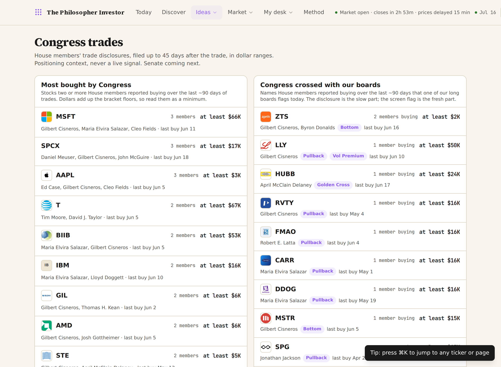
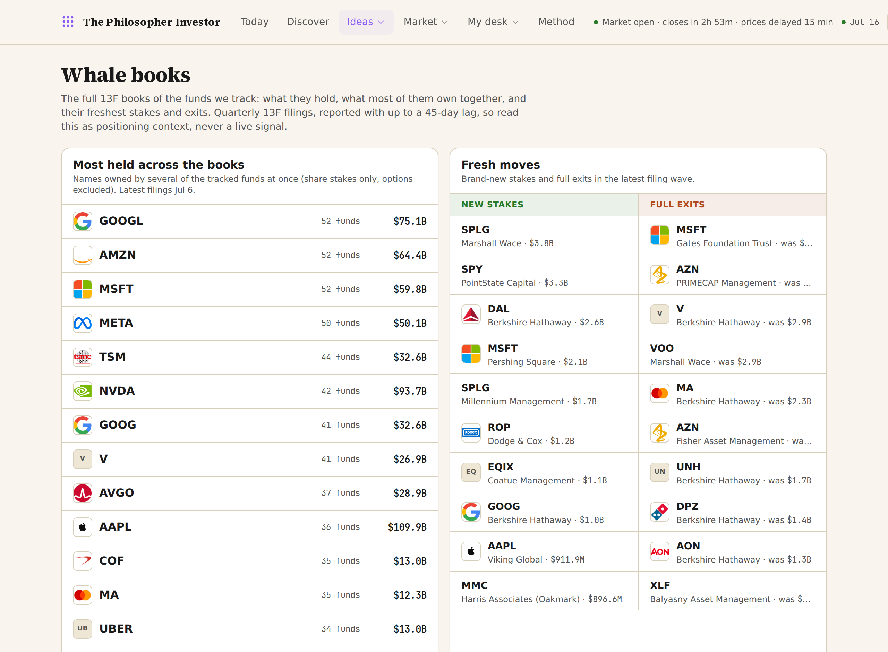
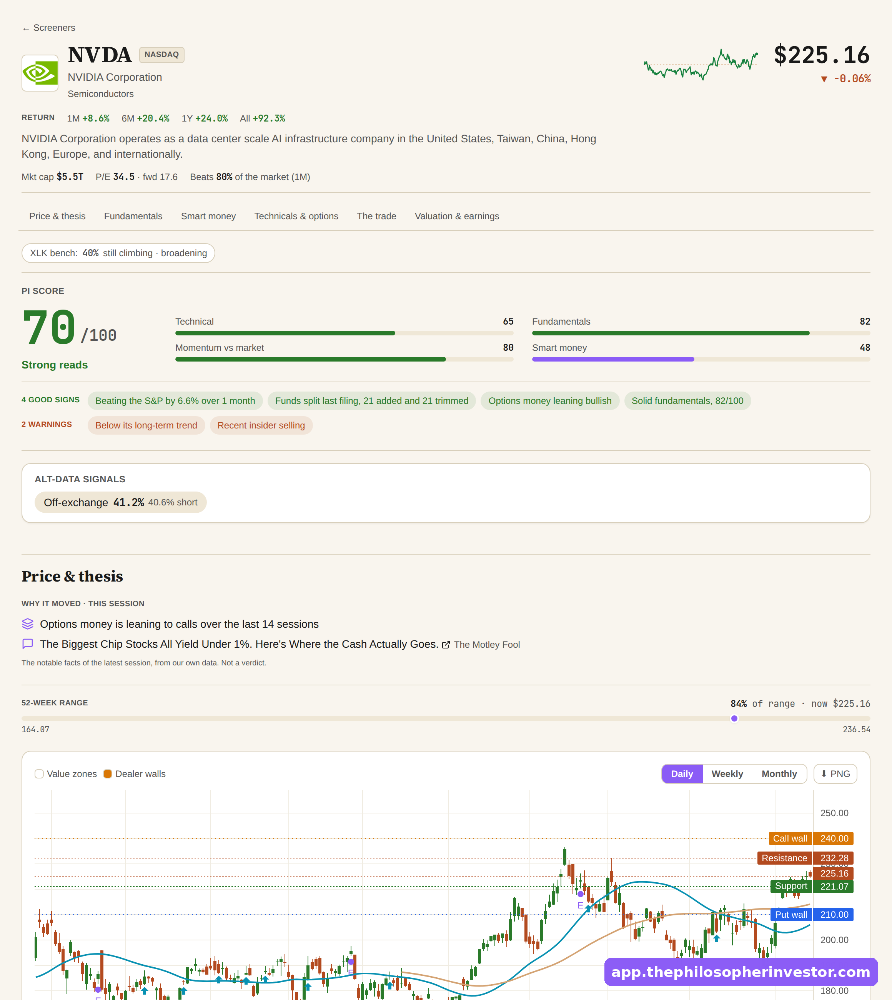
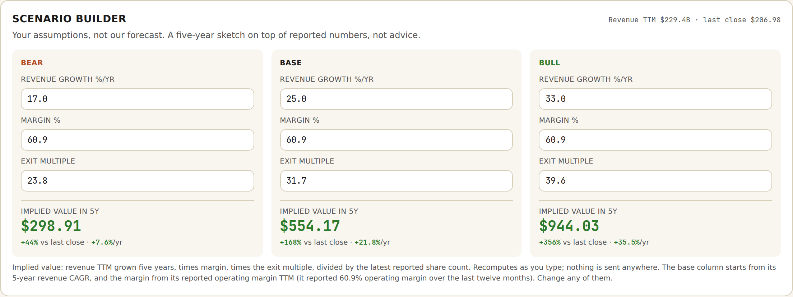
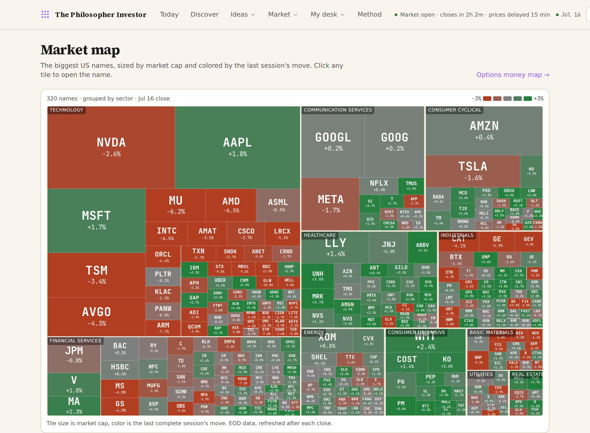
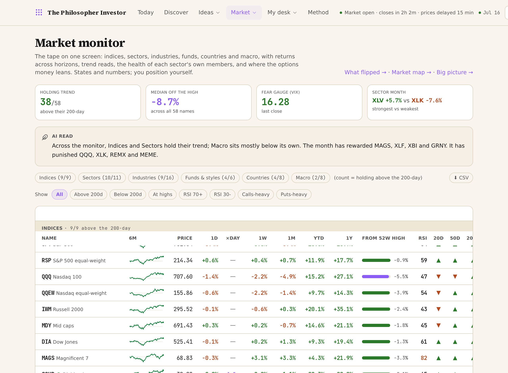

Relance feature-led trois jours avant la fin de l'offre : la preuve que la promesse du launch (« I ship improvements every week ») est tenue. 6 blocs, 6 captures fraîches du 16 (Congress, whales, name page, scenario builder, Market map, Market monitor), et le vrai argument de close : le produit grossit, le prix ne fait que monter, le founding est le plancher. Même voix et même offre que les emails 1 et 2b.
https://philosopherinvestor.substack.com/6d349d41. Envoi : ce soir, jeu 16 juil, à toute la liste. Les 6 captures sont du 16/07 (5 shootées live sur l'app, 1 du batch du matin) : rien à re-vérifier côté fraîcheur. Chaque feature citée trace à data/app_features.json (drops publiés 12-13/07) ou à une route live vérifiée en prod le 16/07 (/heatmap, /monitor, /insiders, /calendar, /earnings, /alerts, /portfolios).
Le hook = la promesse du launch day, tenue et datée. Le corps = 4 upgrades montrées comme un changelog vivant (Congress, whales, name page, screeners), chacune avec sa capture. Le close = la logique du prix : tout ça a shippé sans que personne paie un centime de plus, le prix suit le produit, il ne sera jamais moins cher que maintenant. Zéro stat de perf, zéro claim à vérifier.
A: [NEW] Congress trades just hit the app
B: [3 DAYS LEFT] 20 upgrades since launch day
C: 20 new features in 12 days (here's the receipt)
D: Want to see what Congress is buying?
E: [NEW] Buffett's whole book, opened
F: Congress is trading. Now you can watch.
G: [3 DAYS LEFT] The app you saw on launch day is already old
H: What your $100 buys now (it grew this week)
Pour dimanche 19 (email final) : garde en réserve l'objet lowercase façon Dickie last email about this (celui de sa séquence du 1er juillet), ou [FINAL HOURS] the founding price ends tonight. Ne pas le griller ce soir.
Hello my friends,
On launch day I made you one promise: the app improves every week, and members get every upgrade the morning it lands. That was twelve days ago. More than twenty features have shipped since. Here is the receipt.
Congress trades, tracked. Every stock trade House members disclose now lands in the app: who bought what, in which dollar range, and how long they sat on the news before filing. The names Congress is buying get crossed with our own boards, so you see when a politician's pick also fires on a screen the same day. And if a member trades a name on your watchlist, the app tells you. Whole products are sold on this one feature. For members, it is included.
[ IMAGE 1 ]
The smart money desk got five times bigger. The Whale books now track more than 100 funds: Buffett, Burry, Druckenmiller, Oaktree, ARK and the rest. New on the page: Consensus buys, the names the most funds bought last quarter, and Consensus sells, the crowded exits. Every fund now has its own page, with its full disclosed book and the stakes it just opened and closed. You can even follow a manager: pick one, and when their next 13F drops you get an email with what they opened, added and cut. The desk also cross-reads our own screens: which fund favorites sit in a dip today, which names two or more funds bought at the same time, whose past buys actually went on to beat the index, and which insiders are buying their own beaten-down stock. Filings carry up to a 45-day lag, so read all of it as a map of where the big money leans, and let the screens time the entry.
[ IMAGE 2 ]
The name page got deeper. The screen I showed you last week kept growing. Every covered name now opens with a PI Score, one number out of 100 that blends the technicals, the fundamentals and the smart money read, with the good signs and the warnings spelled out under it. Two gauges, each out of ten, score balance sheet strength and profitability, every point earned by a check you can read, with the published nine-check Piotroski F-Score underneath. Below that: twelve years of financials as annual bars, and sixteen quarters of revenue, margins and cash generation, all straight from SEC filings.
[ IMAGE 3 ]
My favorite of the batch is the scenario builder. You set your own growth, margin and exit multiple, and the implied five-year value recomputes as you type, bear, base and bull, prefilled from the company's reported numbers. Next to it, a read of what growth rate is priced into today's multiple against what the company actually delivered. The gap between the two is the conversation. Add a comps table against industry peers, and how the stock has behaved by calendar month next to its volatility and drawdown, and the two-minute check became a full dossier.
[ IMAGE 4 ]
The market got its own floor. A Market map now tiles the biggest US names by size and colors them by the session's move, so you spot where the money ran in one glance. Click any tile and you land on the name. An insider desk flags cluster buys, several insiders stepping into their own stock in the same window. An earnings calendar lines up the next two weeks with your watched names pinned on top. And an earnings desk logs how every post-earnings setup ages, the wins sitting next to the losses.
[ IMAGE 5 ]
Next to it, a Market monitor puts the whole tape on one screen: indices, sectors, industries, funds, countries and macro, with returns across every horizon, trend reads, and where the options money leans on each. Filter it down to what is holding its 200-day, what is overbought, or where the calls are crowding, and export any of it to CSV.
[ IMAGE 6 ]
And your own book got tools. Set an alert on any name, a price level or a condition, like the day it lands on one of our boards, and it comes to you instead of you refreshing charts. Watchlists went multiple, one list for holdings, another for hunting, and every name you follow now carries its latest headlines, its next earnings date and its fresh SEC filings. Paste your positions and a report card grades the book on five checks, with a summary in your inbox every Friday. Three model portfolios opened, one per investing style, filled only by picks the desk publishes, every entry dated and priced, building forward from here. Even the Today page now opens with what changed since your last visit. And there are smaller touches everywhere that you will trip over on your own.
Here is why I am showing you all this three days before the deadline. Everything above shipped in the last week and a half. Members woke up to each one, and nobody paid a cent more. That is what the membership is: the tool as it stands today, plus everything it becomes. The list of what is coming is longer than the list above, and the price will follow the product up. It will never be cheaper than it is right now.
The honest word from launch day still holds: the app brings the work, and the judgment stays yours. More features widen what you can see. What you do with it is still the job.
Until Sunday, July 19, the founding offer is still open: 50% off your first year, $100 instead of $200, which works out to about $8.33 a month. After Sunday the price is $200 a year, and the founding rate does not come back. If a year up front feels like a lot, there is a monthly option, cancel any time in one click, so you can start small and see it for yourself.
[ BUTTON: Claim the founding price → https://philosopherinvestor.substack.com/6d349d41 ]
Daniel
P.S. The building does not stop on Sunday. The only thing that changes is the price you lock for your first year.
Captures : [1] /congress (Most bought + croisement boards) · [2] /whales (Most held + Fresh moves) · [3] la name page NVDA (PI Score, financials) · [4] le scenario builder NVDA (bear +44% / base +168% / bull +356%) · [5] la Market map (treemap 320 noms) · [6] le Market monitor (stat band + AI read). Toutes du 16/07, prêtes à glisser.
Twelve days since the app opened, and the launch-day version is already the old one. Shipped since: every stock trade House members disclose, crossed with our boards and your watchlist. Whale books on 100+ funds, with consensus buys and consensus sells. A PI Score, twelve years of financials and a scenario builder on every name. A market map, a market monitor, and alerts that come to you.
Members got each one the morning it landed, at the same price.
The founding rate ends Sunday, July 19. Half off year one, $100 instead of $200.





